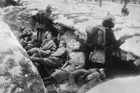
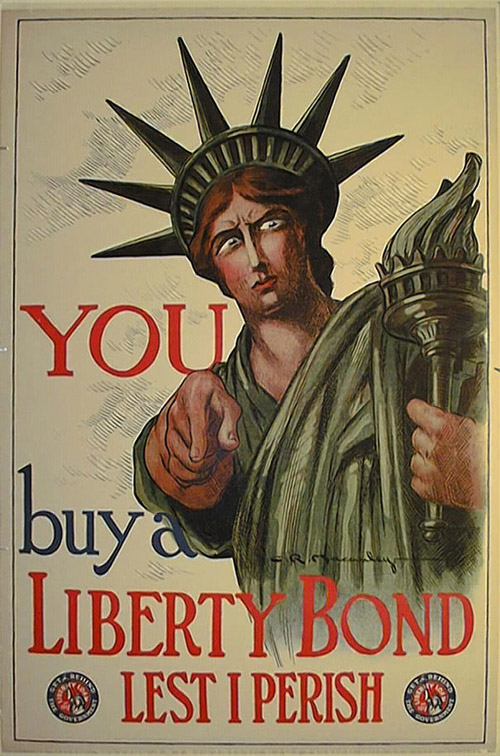
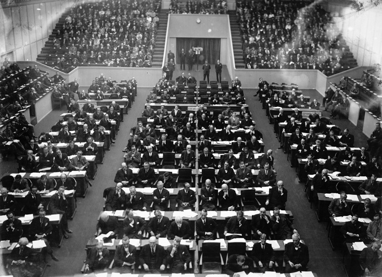

Background
Nations around the world were developing their military and forming alliances, and some of these nations were imperialist. The world, mainly Europe, was highly tense. The tensions were unleashed when Galvrilo Princip assassinated the Archduke of Austria-Hungary Franz Ferdinand. There was a chain of war declarations and the Great War had begun. There were two major alliances, the Entente (France, UK, Russian Empire) and the Axis Powers (German Empire, Austria-Hungary, Kingdom of Italy).
US Involvement
The US was, for most of the war, neutral. However, events such as the sinking of the British passenger ship, RMS Lusitania, and the sending of the Zimmerman Note (Germany attempts to get Mexico to go to war with US) cause Americans to push for war. On April 6, 1917, the US declared war on Germany. The US government increased their power in the nation. They started the draft, raised prices on food to conserve it for troops, created war proproganda, sold liberty bonds, and subsidized industry. The US was a large part of the war effort and fought battles alongside of donating tons of money to the cause. The US and the Entente won the war a year and a half after the US joined.
Aftermath
The US had established their position as a world power. The president of the US at the time, Woodrow Wilson, was part of the writing of the Treaty of Versailles. He suggested to not overly punish the Axis Powers and to continue having free trade and self-determination for all countires in his 14 Points, though these were mostly ignored. His 14th point, however (League of Nations) was put into action but the US Senate refused to let the US join it.
The League of Nations